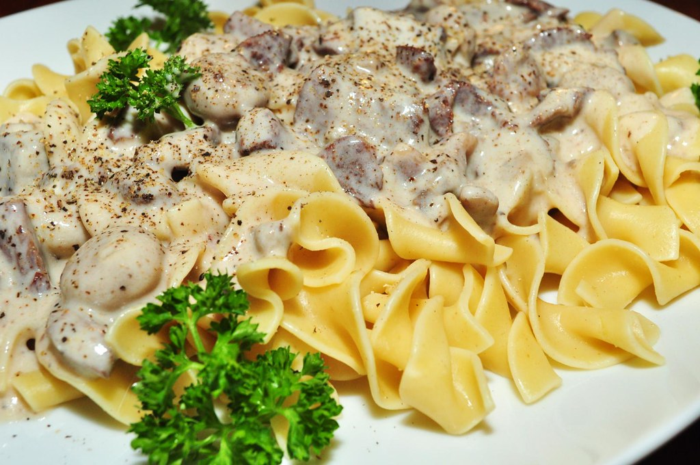

Beef Stroganoff

Description
Laura Vitale's yummy Beef Stroganoff recipe using white wine, cremini mushrooms, and beef sirloin!
Ingredients
- 1-1/2 lb of Beef Sirloin, trimmed of any fat and thinly sliced
- 8oz of Cremini Mushrooms, sliced
- 1 Small Yellow or Red Onion, thinly sliced
- 1/4 cup of White Wine
- 1-1/2 Tbsp of All Purpose Flour
- 1 cup of Beef Stock
- 1 tsp of Worcestershire Sauce
- 1/2 cup of Sour Cream
- 1-1/2 Tbsp of Vegetable Oil
- 2 Tbsp of Unsalted Butter
- 1 Tbsp of Chopped Chives
- 1 Tbsp of Chopped Parsley
- Salt and Pepper, to taste
- Cooked Egg Noodles for Serving
Steps
- In a large skillet, add the oil and allow it to get nice and hot over high heat, add half of the steak,
season with salt and pepper and cook for 1 minute (30 seconds on each side), remove to a plate and set
aside. Repeat with the remaining steak.
- Add the butter to the same skillet allow it to melt, add the onions and mushrooms, season with a pinch
of salt and saute for about 5 minutes.
- Sprinkle the flour over the mushrooms and cook for one minute, add the wine, cook for about 30 seconds.
Add the stock, reduce the heat to medium low and allow it to simmer for about 15 minutes.
- Add the sour cream and cooked beef (along with any juices that collected in the bottom of the plate) and
cook for just a minute or two or until the mixture comes to a light simmer.
- Remove from the heat, stir in the chives and parsley and serve over buttered egg noodles.